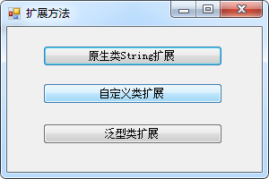

C#扩展方法，简单的理解是不修改原来类的源代码的情况下，为某个类添加某个方法。扩展方法被定义为静态方法，但它们是通过实例方法语法进行调用的。它们的第一个参数指定该方法作用于哪个类型，并且该参数以 this修饰符为前缀。
有一个典型的应用场景，就是程序二开。比如别人的DLL不公开源代码，要想在DLL某个类中添加一个新方法的话，是不太可能的。但是可以使用扩展方法，达到类似的目的。
1、新建两个类文件：Rectangle、GenericClass。
/// <summary>
/// 自定义类(长方形)
/// </summary>
public class Rectangle
{
//属性
public double Width { get; set; } = 0; //宽度
public double Height { get; set; } = 0; //高度
/// <summary>
/// 构造函数
/// </summary>
/// <param name="width"></param>
/// <param name="height"></param>
public Rectangle (double width,double height)
{
Width = width;
Height = height;
}
/// <summary>
/// 求周长
/// </summary>
/// <returns></returns>
public double GetPerimeter()
{
return (Width + Height) * 2;
}
} /// <summary>
/// 泛型类
/// </summary>
/// <typeparam name="T"></typeparam>
public class GenericClass<T>
{
private T tobj;
public GenericClass(T obj)
{
tobj = obj;
}
public T GetObject()
{
return tobj;
}
}2、新建一个WinForm程序，添加3个按钮。

3、下面就原生类String、自定义类、泛型类三种类进行扩展方法。新建一个类，命名为：ExtensionHelper。
/// <summary>
/// 类必须是静态类，方法必须为public static类型，且参数使用this关键字。
/// </summary>
public static class ExtensionHelper
{
/// <summary>
/// 原生类String扩展方法
/// </summary>
/// <param name="str"></param>
public static void SayHello(this string str)
{
if (string.IsNullOrEmpty(str))
{
MessageBox.Show("Hello World.", "提示", MessageBoxButtons.OK, MessageBoxIcon.Information);
}
else
{
MessageBox.Show(str, "提示", MessageBoxButtons.OK, MessageBoxIcon.Information);
}
}
/// <summary>
/// 自定义类扩展方法
/// </summary>
/// <param name="rect"></param>
/// <returns></returns>
public static double GetArea(this Rectangle rect)
{
return rect.Width * rect.Height;
}
/// <summary>
/// 泛型类扩展方法
/// </summary>
/// <param name="gc"></param>
/// <returns></returns>
public static string Show (this GenericClass<string> gc)
{
return gc.GetObject().ToString();
}
}4、WinForm代码如下：
/// <summary>
/// 原生类String扩展
/// </summary>
/// <param name="sender"></param>
/// <param name="e"></param>
private void button1_Click(object sender, EventArgs e)
{
string str = "";
//string str = "Welcom to China.";
str.SayHello();
}
/// <summary>
/// 自定义类扩展
/// </summary>
/// <param name="sender"></param>
/// <param name="e"></param>
private void button2_Click(object sender, EventArgs e)
{
Rectangle rect = new Rectangle(10, 10);
MessageBox.Show("长方形的面积是：" + rect.GetArea().ToString(), "提示", MessageBoxButtons.OK, MessageBoxIcon.Information);
}
/// <summary>
/// 泛型类扩展
/// </summary>
/// <param name="sender"></param>
/// <param name="e"></param>
private void button3_Click(object sender, EventArgs e)
{
GenericClass<string> gc = new GenericClass<string>("这是一个泛型类扩展方法。");
MessageBox.Show(gc.Show(), "提示", MessageBoxButtons.OK, MessageBoxIcon.Information);
}参考自：https://www.cnblogs.com/forever-Ys/p/10315830.html